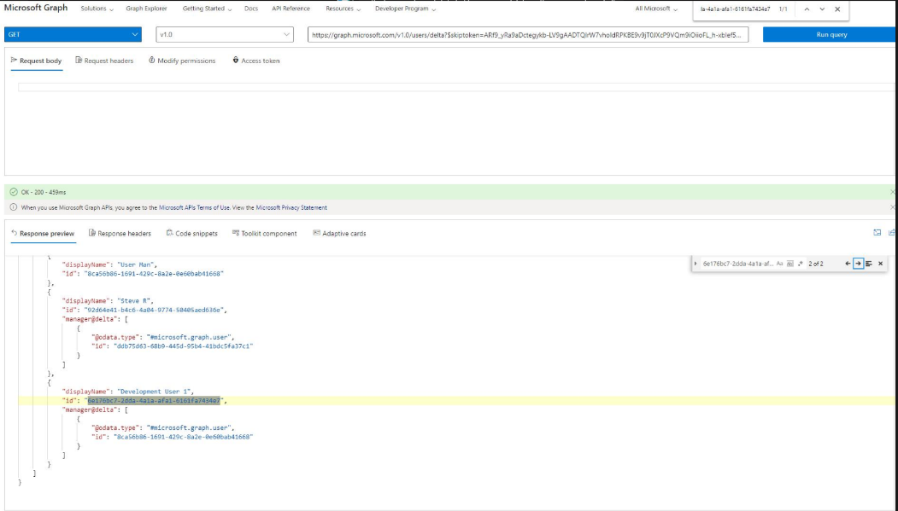
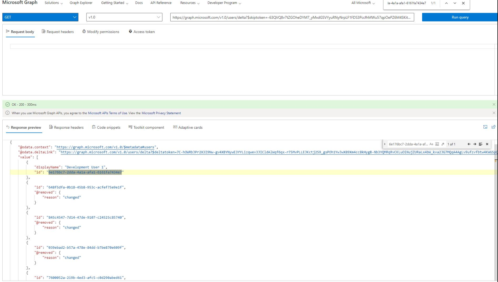
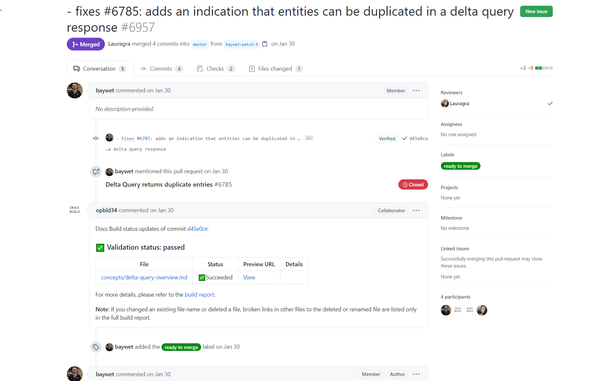
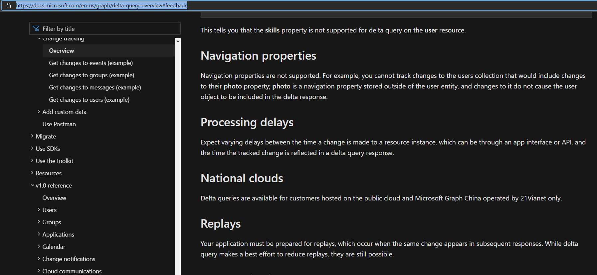

Summary:
AD Azure Inventory Manager Field not reporting correctly
Submitted by:
Justin Giemza
Cumulative List of fixes included since Service Pack:
10.0_022 - Azure ADI: Failure to scan when TLS 1.0 and 1.1 disabled
Affected Versions:
10.0
Affected Module:
SA – Azure ADI
Dev Ticket:
SAT-8336
Resolved in Version:
Stealthbits.StealthAUDIT.DataCollectors.AzureADInventory.dll v. 10.0.36
Stealthbits.StealthAUDIT.DataCollectors.AzureADInventory.UI.dll v. 10.0.36
DCAzureADInventory.dll v. 10.0.36
KB Type: Bug
Issue:
Here is how the issue manifests itself outside of SA environment:
Development User 1 has a manager on this page

Development User1 does not have a manager on the following page

Thus, SA overrides the manager id value with null when encountering the second duplicate instance of the same user within the same result set.
This problem is documented by Microsoft as of January 30th 2020 per https://github.com/microsoftgraph/microsoft-graph-docs/pull/6957

Microsoft calls this phenomenon replays per https://docs.microsoft.com/en-us/graph/delta-query-overview#feedback:

Other Microsoft Graph users have brought this issue to Microsoft as well per https://github.com/microsoftgraph/microsoft-graph-docs/issues/5363
Instructions:
- Unblock the hotfix zip file in the windows property dialog if an unblock button exists there.
- Close all instances of StealthAUDIT (check task manager under processes for all users)
- Exit StealthAUDIT console
- Copy and replace files from the folders in this hotfix to the corresponding folders in SA Install dir.
https://downloads.stealthbits.com/access/files/SAHotFixes/10.0/SA_10.0_047.zip